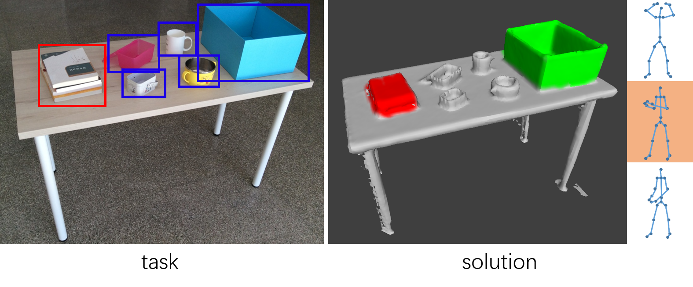

hide forever |
hide once
hide forever |
hide once
Transferring Object: Joint Inference of Container and Human Pose
Hanqing Wang1,Wei Liang1 |
|
Lap-Fai Yu2 |
1Beijing Institute of Technology |
2University of Massachusetts Boston |
 |
Abstract
Transferring objects from one place to another place is a very common task performed by humans in daily life. While it is usually intuitive for humans to choose a proper container and an efficient pose to transfer objects, it is non-trivial for computers. In this paper, we propose an approach to jointly infer the container and human pose for performing a transfer task, to allow computers to predict and reason about how humans interact with their physical surroundings with regard to transferring objects given visual input. Given a transfer task, our approach infers a proper container and a carrying pose by minimizing the costs associated with the transfer. In the learning phase, our approach learns how humans make rational choices of containers and poses for transferring different objects. It also learns the physical qualities of transfer tasks (e.g., compatibility between container and containee, energy cost of carrying pose) by a structured learning approach. In the inference phase, given a scanned 3D scene with different containers and the target containees, our approach infers the best container and pose for carrying out the transfer task. Actually, our approach learns the importance of different coefficients in transfer tasks. Our experiments show that people estimate the affordance of the object in transfer task according to the the coefficients like the compatibility of containee and container, the compatibility of container and human pose. From this perspective, many objects can be viewed as a container. Further more, it helps computer to comprehend the pose of people during transfer tasks, which can be used in man-machine cooperation and the danger estimation during labour.
Index Terms: HCI, tool understanding
Transferring Object: Joint Inference of Container and Human Pose
Hanqing Wang,
Wei Liang,
Lap-Fai Yu
IEEE International Conference on Computer Vision (ICCV 2017)
Paper, Video
@article{Wang2017Transferring,
title =
{Transferring Object: Joint Inference of Container and Human Pose},
author = {Wang, Hanqing and Liang, Wei and Yu, Lap-Fai},
journal = {IEEE International Conference on Computer Vision},
year = {2017}
publisher = {IEEE}
}
This research is supported by the Joseph P. Healey Research Grant Program provided by the Office of the Vice Provost for Research and Strategic Initiatives & Dean of Graduate Studies of UMass Boston. This research is also supported by the National Science Foundation under award number 1565978. We acknowledge NVIDIA Corporation for graphics card donation.